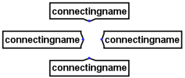
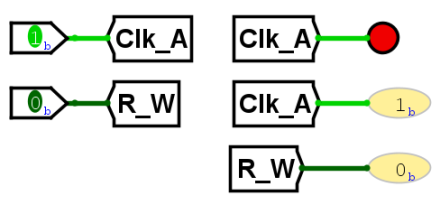

| Library: | Wiring |
| Introduced: | 2.5.0 (in Base library, moved to Wiring in 2.7.0) |
| Appearance: |  |
A tunnel
acts like a wire in that it binds points together,
but unlike a wire the connection is not explicitly drawn.
This is helpful when you need to connect points far apart in the circuit
and a network of wires would make the circuit much more ugly.
The below illustration illustrates how this works.

Here, all three tunnels have the same label, a, and so the three points to which the tunnels point are connected. (If one of the tunnels were labeled something else, like b, then it would be part of a different set of tunnels.) The controlled buffer at top emits a floating output since its lower input is 0. This normally leads the wire coming from the controlled buffer to be blue; but here it is dark green because the floating output combines through the tunnel with the 0 from the pin at bottom. If the control input into the buffer changes to 1, then the controlled buffer would feed 1 into the tunnel, which would combine with 0 from the pin at bottom to result in an error value; thus, we would then see red wires feeding through all three tunnels.
A tunnel has only one pin, whose bit width matches the tunnel's Data Bits attribute. This pin is neither an input nor an output — the matching tunnels are simply connected transparently.
When the component is selected or being added,
Alt-0 through Alt-9 alter its Data Bits
attribute
and the arrow keys alter its Facing
attribute.
None.
Allows the label associated with the tunnel to be edited.